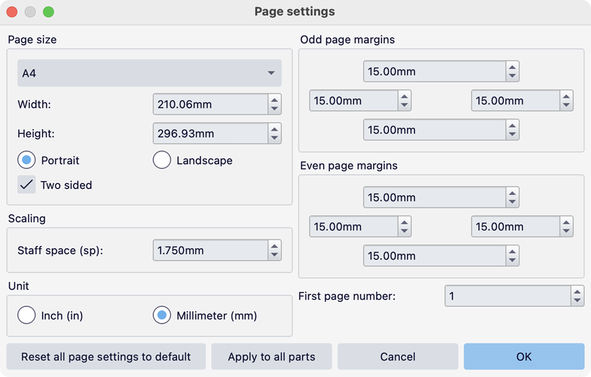
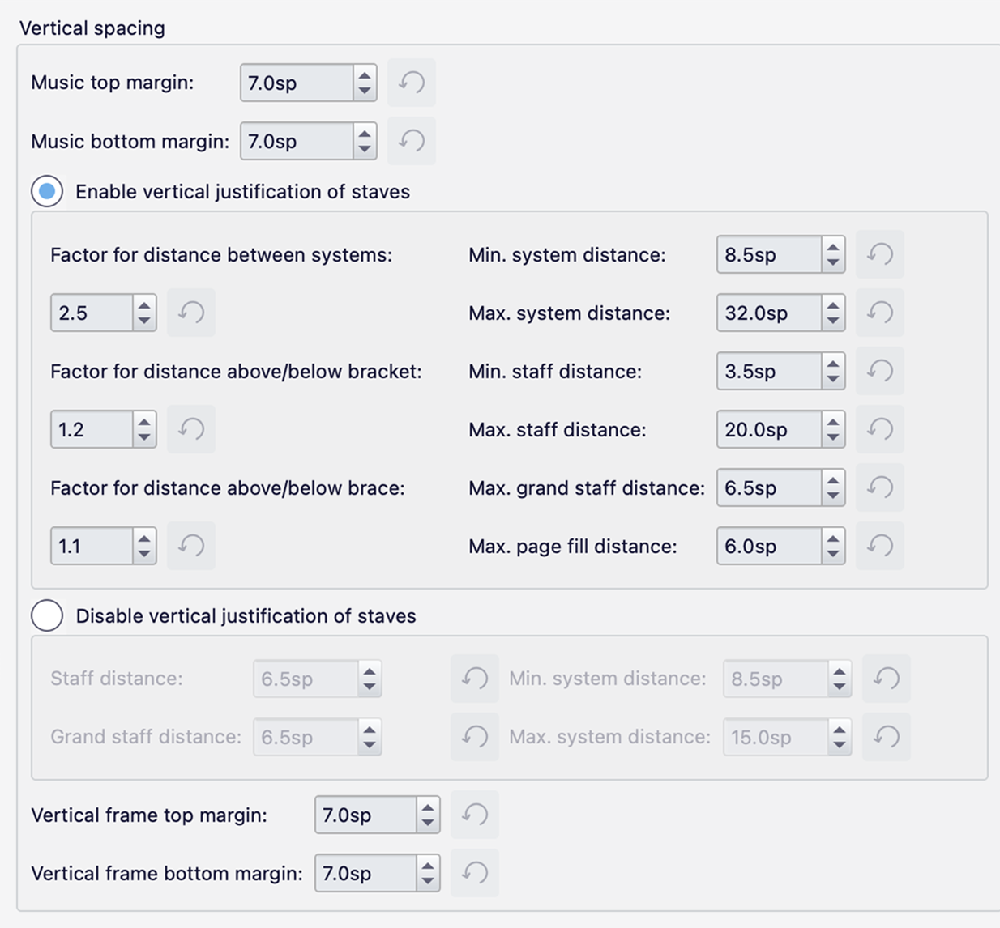
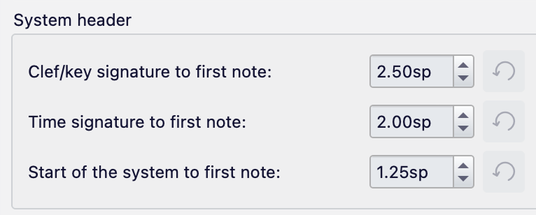

乐谱大小和间距
本页介绍可用于确定乐谱整体排版的高层设置。有关对水平排版进行更具体更改的详细信息，请参阅系统和水平间距。有关垂直排版，请参阅页面和垂直间距。
页面设置
控制页面排版和音乐整体大小的设置在 格式→页面设置 中：

页面和边距大小
- 页面大小：从一系列预定义页面大小中选择。
- 宽度：设置自定义宽度。
- 高度：设置自定义高度。
- 纵向或横向：设置页面方向。
- 双面：如果勾选，这允许为奇数页和偶数页分别设置边距（以及页眉和页脚）。
- 奇数页边距：设置奇数编号页面的上、下、左、右页边距。
- 偶数页边距：设置偶数编号页面的上、下、左、右页边距。如果未勾选双面，这些选项将被禁用，奇数页边距将应用于所有页面。
默认页面大小在北美和中美洲是 Letter，在世界其他大多数地区是 A4。无论页面大小如何，边距默认都是 15mm。
默认谱表空间大小是 1.75mm，产生 7mm 的谱表。如果所需谱表数量无法放入页面，创建新乐谱时此值可能已自动减小。
在某些模板中，这些默认值可能定义得不同。
缩放
谱表空间 (sp) 定义谱表空间的大小，即两条谱表线之间的距离。这可能是乐谱排版最重要的单一设置，因为乐谱中大多数项目的大小都会缩放以匹配它。（某些类型的项目——例如文本、框架和图像——可以改为赋予绝对大小。有关这些项目的详细信息，请参阅相关页面。）
可以将乐谱中的单个谱表设置为不同的大小，作为此基本大小的比例（例如，创建提示谱表）。请参阅谱表/分谱属性。
另请参阅：页面排版概念。
其他设置
- 起始页码：设置页码开始的数字。例如，如果你有标题页或前言，这会很有用。允许负数，但低于 1 的任何数字都不会显示在乐谱中。
- 单位：英寸或毫米，将用于此对话框中所有相关的值。
要将此对话框中的所有设置重置为默认值，请单击将所有页面设置重置为默认值按钮。
如果你正在更改分谱的页面设置，并希望将这些设置应用于乐谱的所有分谱，请单击应用到所有分谱按钮。请参阅分谱。
样式设置
垂直和水平间距的工作方式非常相似：
- 在垂直间距中，计算每个系统所需的最小高度，然后计算出每个页面可以容纳多少个系统，然后展开每个页面上的谱表以填满垂直空间。
- 在水平间距中，计算每个小节所需的最小宽度，然后计算出一个系统上可以容纳多少个小节，然后展开这些小节的内容以填满水平空间。
这类似于文字处理器中"两端对齐"选项的工作方式。这些计算的精确方式，以及展开（"对齐"）的完成方式，可以使用 格式→样式→间距 中的设置来控制。
垂直间距

音乐上边距和音乐下边距指定最外侧谱表线与页面边距之间的最小距离。
垂直框架上边距和垂直框架下边距指定垂直框架与上方和下方最近谱表线之间的默认最小距离。请参阅使用框架添加额外内容。
其余设置决定 MuseScore Studio 如何在页面上的垂直空间中分布谱表。
当选中启用谱表垂直对齐时，MuseScore 会尽最大努力将谱表分布在整个页面上，填满所有空间。它试图在谱表之间创建均匀的空间，但也可以在系统之间和系统内的乐器组之间创建成比例的更多空间。三个因子设置控制此行为。最好通过示例来展示：

这些因子是两个谱表之间"基本"距离的倍数。该距离可以在长笛和双簧管、小号和长号、小提琴和大提琴之间看到。
- 系统间距离因子在这里设置为 4.0，意味着相邻系统之间的距离应为基本距离的 4 倍。
- 括号上方/下方距离因子已设置为 2.0，意味着重括号上方或下方的距离应为基本距离的 2 倍。
- 花括号上方/下方距离因子保持默认值 1.1。在其他情况下，这会导致钢琴两侧产生非常少量的额外空间，但在这里它没有效果，因为它被两侧括号组的因子所压倒。
其余选项定义各种最小值和最大值：
- 最小系统距离和最大系统距离：两个相邻系统之间的最小距离。
- 最小谱表距离和最大谱表距离：两个相邻谱表之间的最小和最大距离。
- 最大大谱表距离：由花括号连接的谱表之间的最大距离。此设置对于防止属于单个乐器的谱表被分散得太开很有用。
- 最大页面填充距离：在所有其他标准满足后，为填满页面可以添加的最大额外空间量。这主要用于防止部分填满的页面（只包含几个谱表）被过度展开。如果你总是希望谱表被对齐，无论页面上有多少谱表，请将其增加到较大的值。
如果选中禁用谱表垂直对齐，谱表将以固定距离开始，然后根据需要增加该空间以避免冲突。如果页面有多个系统，可以在系统之间添加空间（但不能在系统内部）以填满可用空间，直到某个最大值。此选项在大多数情况下会导致整个乐谱的底部边距参差不齐。
以下选项控制此行为：
- 谱表距离：两个相邻谱表之间的基本距离。
- 大谱表距离：由花括号连接的谱表之间的基本距离。
- 最小系统距离和最大系统距离：两个相邻系统之间的最小和最大距离。
请注意，最大值从来不是绝对的。如果为了避免相邻谱表上项目之间的冲突而有必要，它们总是会被超过。
在 格式→样式→乐谱→自动放置 中有一个与垂直间距相关的设置：
- 最小垂直距离：这是在相邻谱表上的项目之间强制实施的最小垂直距离，除非已为它们关闭自动放置。你可以通过将其设置为较大的负值（例如 -999）来完全禁用此设置，不过之后你必须处理由此产生的冲突。
最后，可以通过谱表/分谱属性对话框中的谱表上方额外距离设置在特定谱表上方（贯穿整个乐谱）创建额外距离。请参阅谱表/分谱属性。
水平间距

前四个选项控制水平间距算法的一些基本方面。
系统密度影响 MuseScore 对系统上尝试容纳多少小节的默认计算。通常应保持其默认值 100%，但如果你希望 MuseScore 默认将更多小节挤到一个系统上（这会牺牲时值之间的比例间距），可以增加它；如果你希望默认在系统上看到更少的小节，则可以减小它。请注意，这只影响 MuseScore 的默认初始排版：例如，它对已锁定的系统内的间距没有影响。
间距比例设置 1:2 比例中时值所需空间的比率。例如，默认值 1.5 意味着二分音符占用的空间是四分音符的 1.5 倍。将比率设置为 1.0 意味着所有音符都有相等的空间，无论其时值如何；将其设置为 2.0 意味着音符的间距将完全与其时值成比例（即二分音符获得四分音符两倍的空间——实际上是"时空记谱法"）：

你可能更喜欢像 1.6 这样的值来略微强调差异，或 1.4 来略微拉平差异。
请注意，这些只是时值之间的"理想"比例，用作排版计算的起点。实际上，这些总是受到变音记号和偏移音符等其他项目的影响，对于较长时值，最终会在一定程度上被调和，因为不这样做的话，对于大多数音乐来说，几乎不可能在一个系统上容纳超过一两个小节。
最小小节宽度决定小节的最小可能宽度。这对于防止只包含一个小节休止符（或该时值的单个音符）的小节变得太窄很有用。
最后系统填充阈值决定章节的最后系统是否应被对齐（即拉伸到页面的完整水平宽度）。如果系统上小节所需的基本空间量不超过给定总空间的百分比，那么系统将不会被对齐。例如：

后面的大段内边距选项指定不同类型对象之间的距离。其中大多数是绝对设置（例如，谱号到调号或拍号到小节线），但以 '音符到...' 开头的（例如音符到音符和音符到小节线）只代表最小内边距距离，当系统被对齐时，实际空间通常会变得更大。
最后，还有一些系统标题间距的设置，即系统上第一个音符或休止符之前的空间，通常包含谱号，可能还有调号和拍号。

- 谱号/调号到第一个音符：谱号或调号与第一个音符或休止符之间的距离。
- 拍号到第一个音符：拍号与第一个音符或休止符之间的距离。
- 系统开头到第一个音符：从系统的最开始到第一个音符的距离。这在没有显示谱号或调号的场合（例如在某些主旋律谱中）很有用，你想在该行第一个音符之前创建额外空间。